VLČR na LinuxDays 2026
05. 10. 2026
Ve dnech 3. a 4. října 2026 se na půdě Fakulty informačních technologií ČVUT v Praze konal další ročník prestižní konference LinuxDays. Naše studentská iniciativa VLČR u této významné komunitní události zaměřené na open-source, technologie a vývoj samozřejmě nemohla chybět. Pro návštěvníky jsme připravili pestrou přehlídku našich autorských projektů a pro samotné členy šlo o neuvěřitelně přínosnou zkušenost.
U našeho stánku bylo po oba dva dny rušno. Prezentovali jsme zde náš pokročilý automaticky třídicí odpadkový koš poháněný umělou inteligencí, vedle kterého poutali pozornost naši autonomní i bojoví roboti. Velký ohlas sklidil plně funkční a vysoce efektivní počítač sestavený z vyřazených hardwarových dílů, na kterém jsme ukázali, jak smysluplně vdechnout starší elektronice nový život. Technické nadšence zaujal také náš koncept miniaturního elektromagnetického rezonančního digitizéru – speciální podložky pro pasivní stylus určené k psaní a kreslení. Návštěvníci si navíc mohli na vlastní kůži vyzkoušek tisk účtenek běžící na softwaru, který kompletně vyvinuli sami členové VLČR.
Zapojení do takto velkých akcí je pro naše členy obrovskou příležitostí, jak se rychle učit nové věci a získat praktické zkušenosti. To potvrzuje i náš novější člen Oleksandr Šyška: „Byla to skvělá zkušenost. Členem jsem pouhých pár měsíců, ale skvěle jsem zapadl do kolektivu. Vůbec by mě nenapadlo, jak moc přínosné pro mě bude pracovat na projektech s takhle skvělou partou.“ Právě přátelská atmosféra a vzájemná pomoc dělají z VLČR místo, kde i úplný začátečník dostane šanci okamžitě pracovat na reálných technologiích.
Celý víkend se nesl ve výborné a mimořádně inspirativní atmosféře. Během dvou dnů se u nás zastavila řada zájemců o naši činnost, navázali jsme cenné kontakty s lidmi z oboru a potkali spoustu nových nadšenců. Pro celou skupinu to byla obrovská vzpruha do další práce. „U VLČR jsem téměř od začátku a prožil jsem s klukama lepší i horší chvíle. Tato akce mě ale opravdu povzbudila. Mít možnost vystavovat naše projekty na takhle skvělé události, to by mě na začátku ani nenapadlo, že někdy dokážeme,“ dodává dlouholetý člen Hugo Albrecht.
Účast na LinuxDays 2026 pro nás byla skvělou příležitostí prezentovat naši práci v prostředí jedné z nejlepších IT fakult v republice. Domů odcházíme plní dojmů, nových poznatků a hlavně chuti do vývoje dalších projektů. Pro každého mladého člověka se zájmem o techniku je členství ve VLČR ideální cesty, jak přetavit nápady v realitu. Velké poděkování patří organizátorům za skvěle zorganizovanou konferenci, všem návštěvníkům za podporu a našim členům za skvělou reprezentaci!
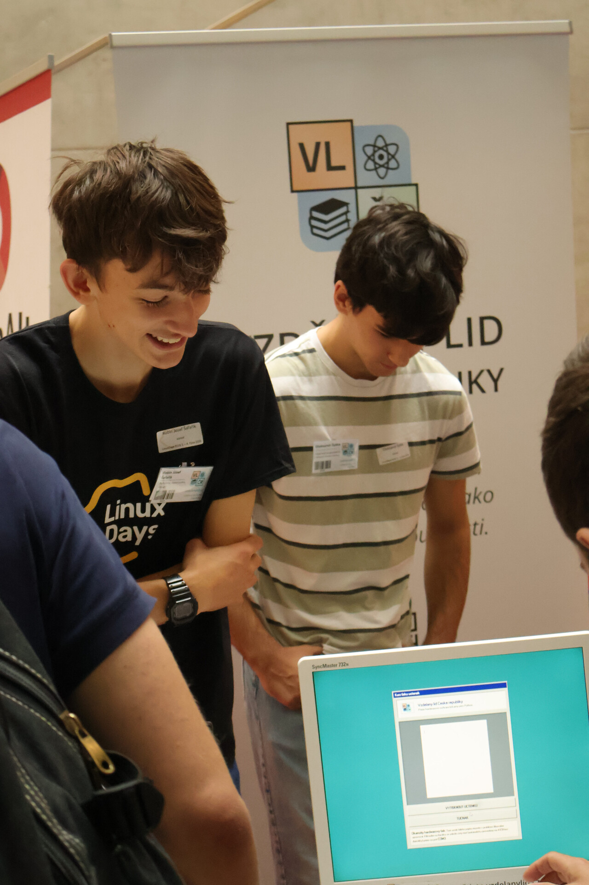
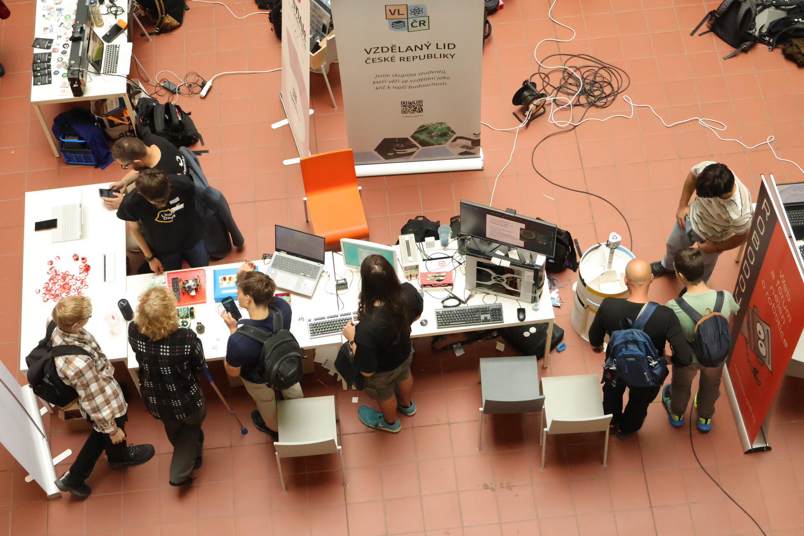
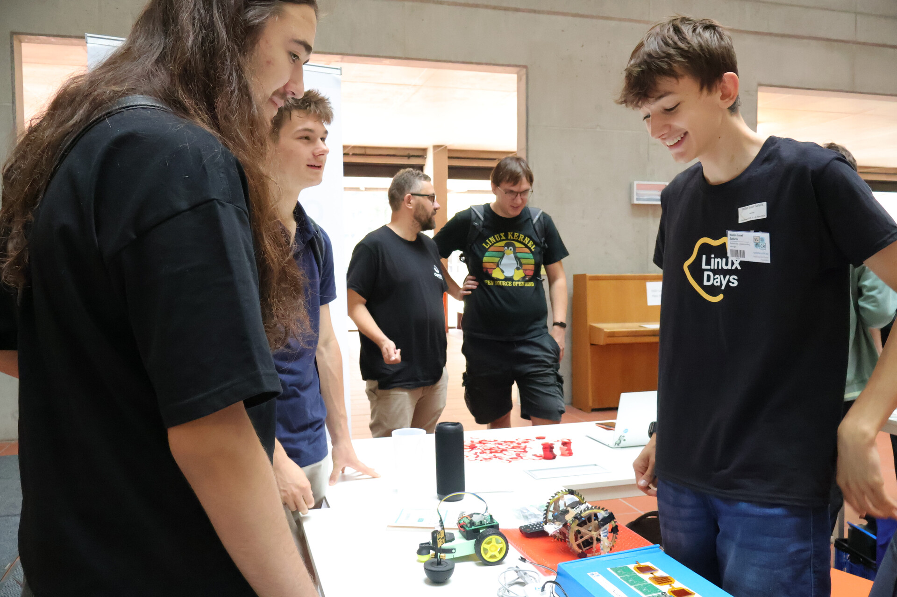
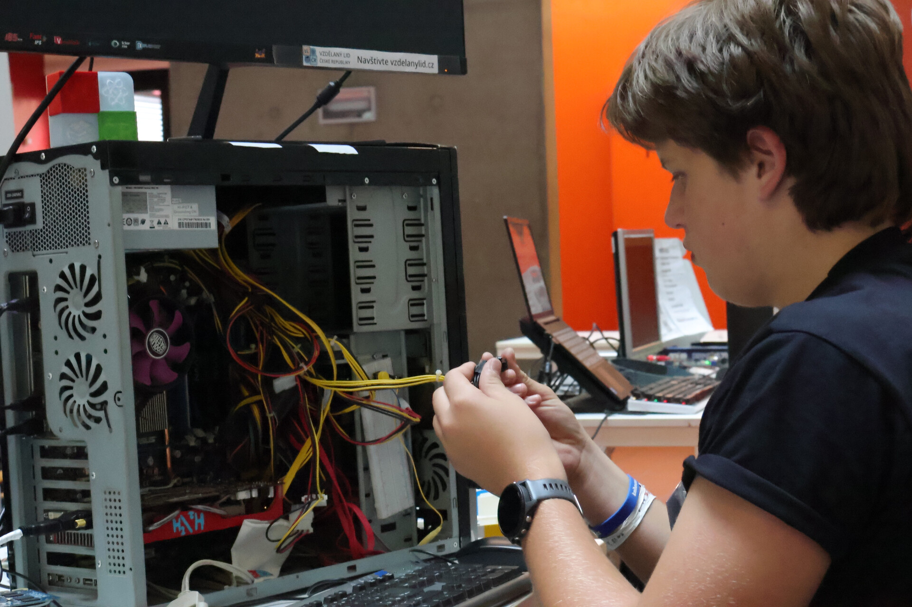
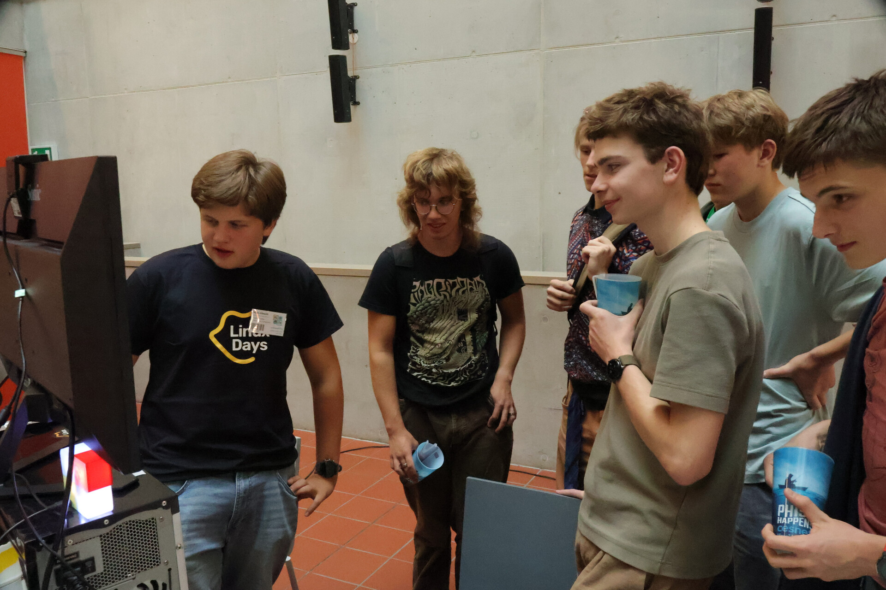
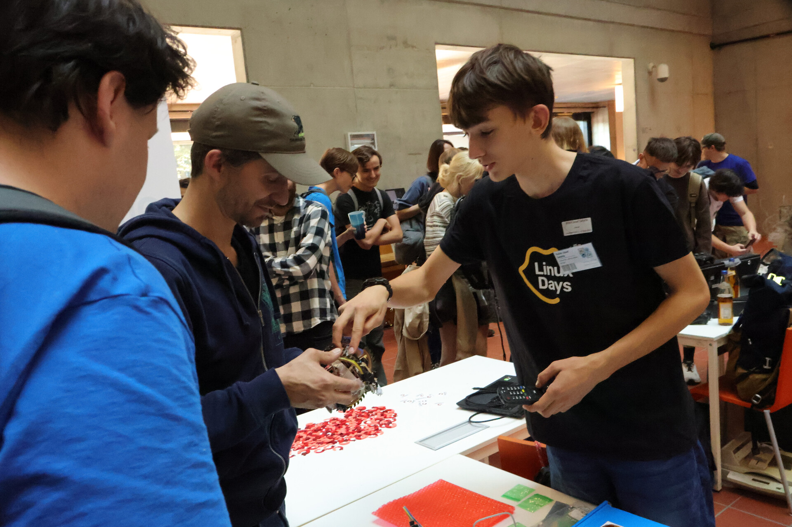
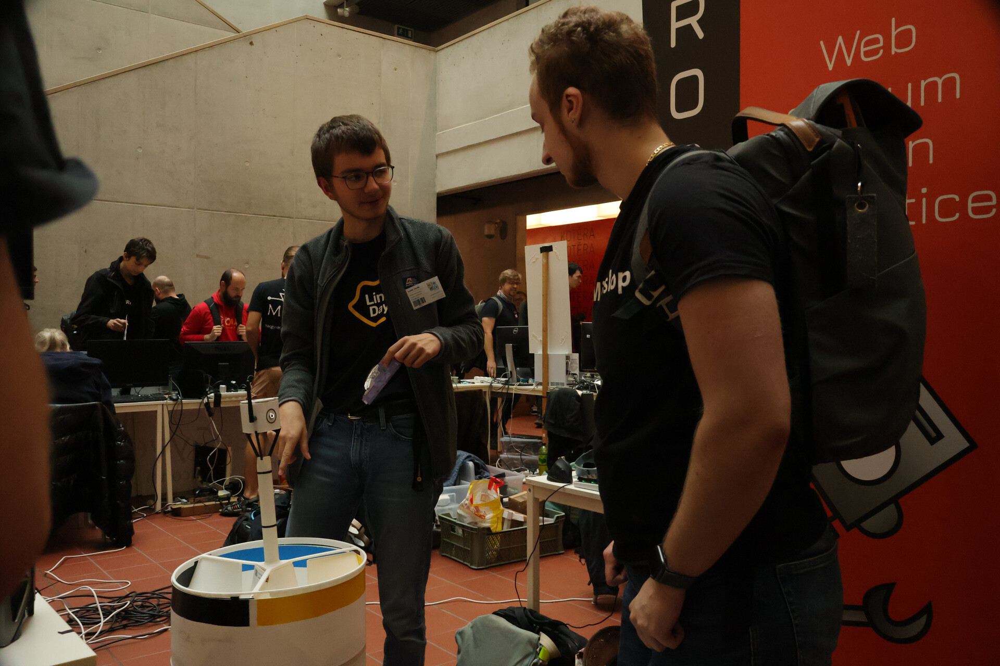
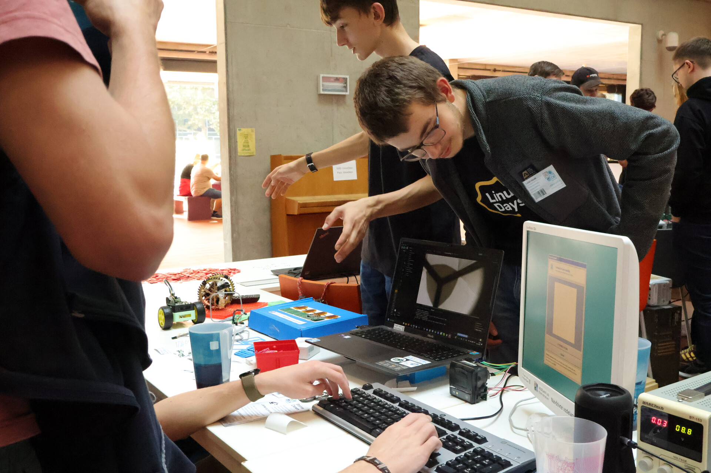
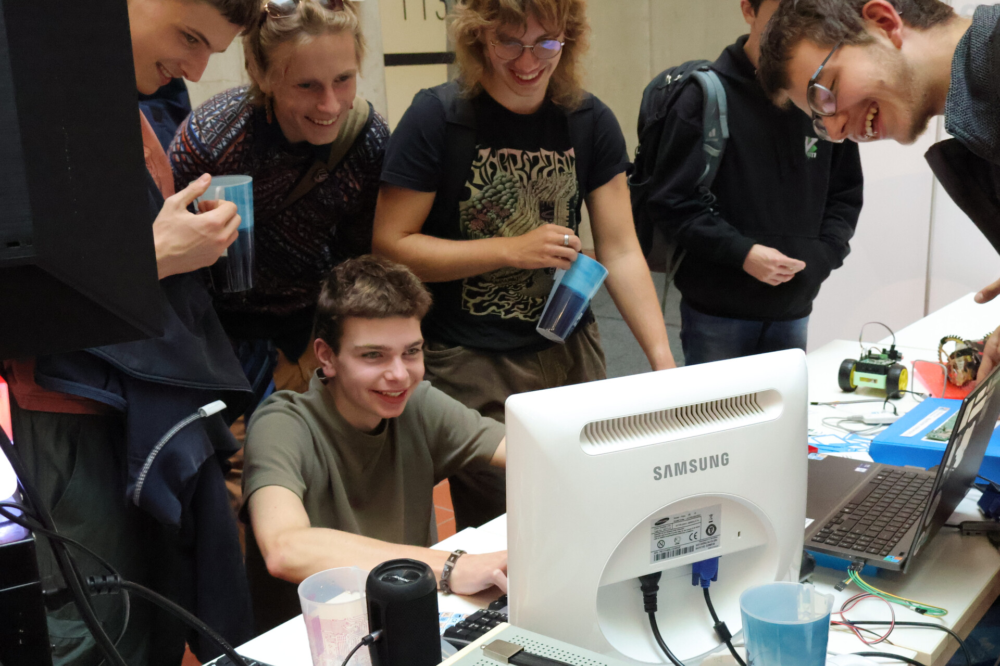
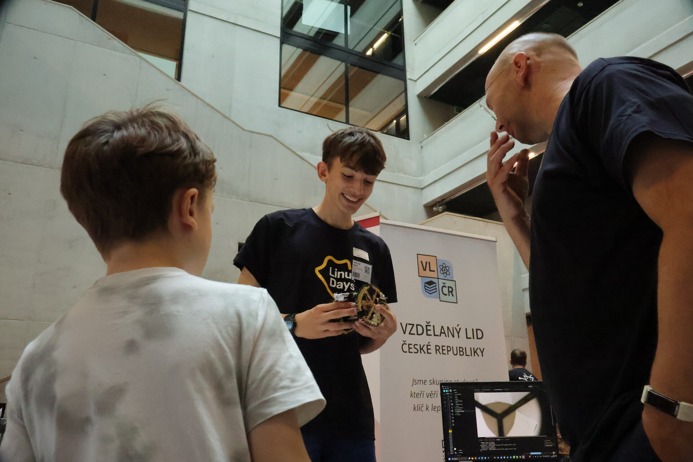

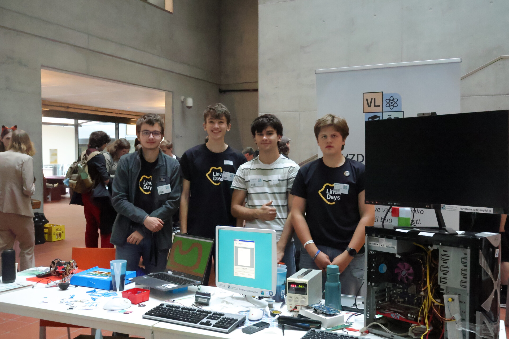
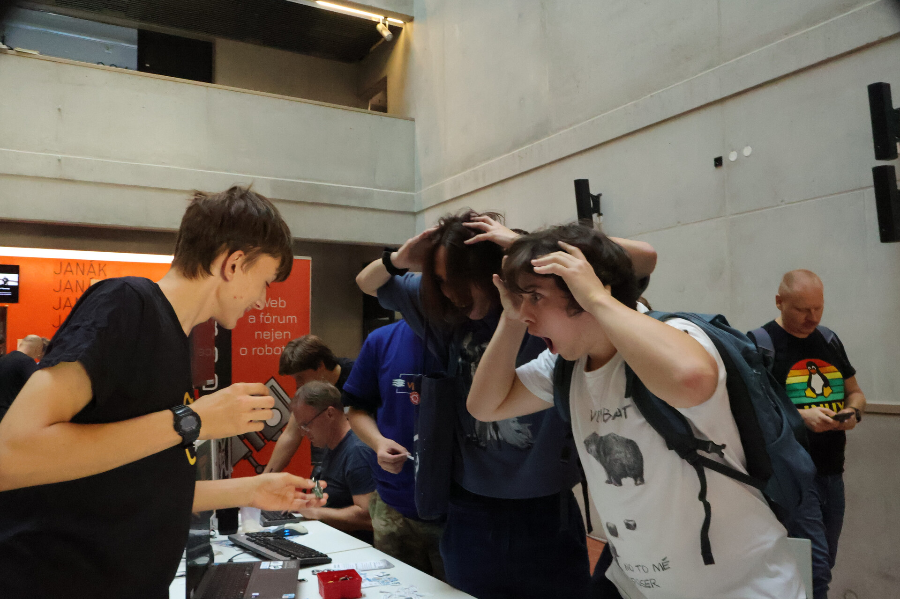
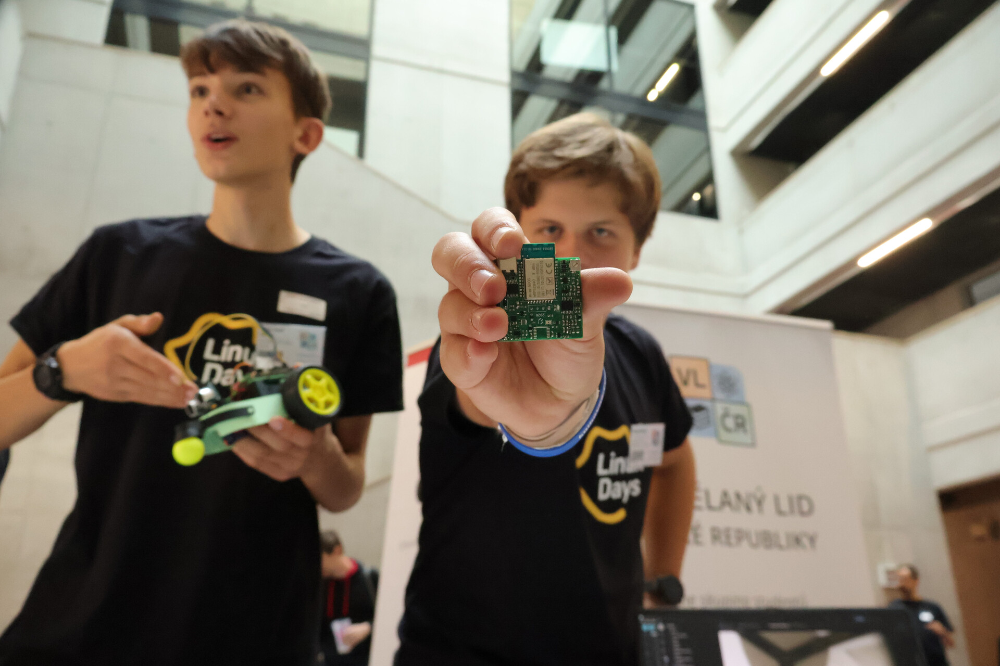
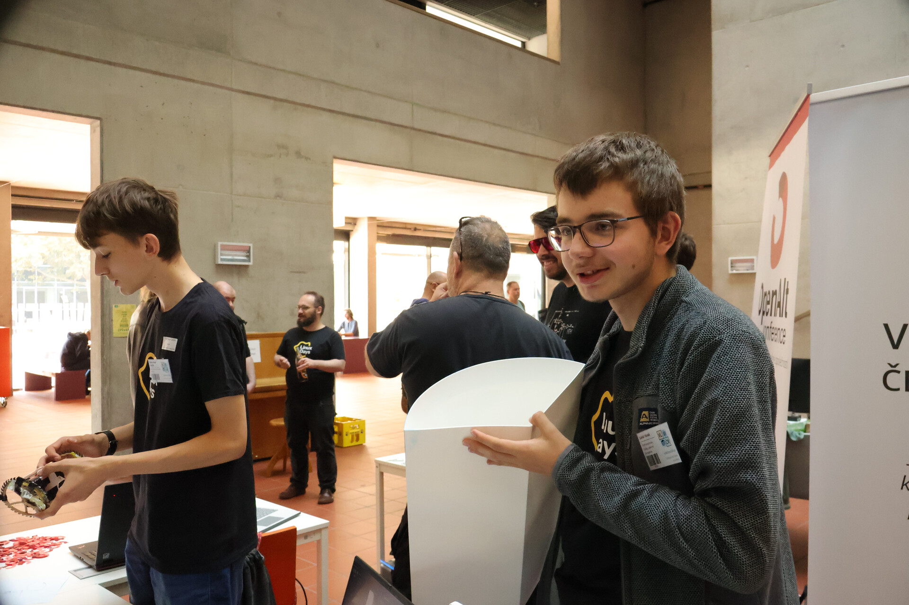